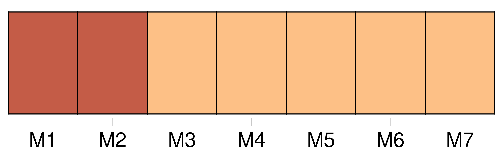

Longueur nb maillons : 102 mentions |
 |
Il est dur d'apprendre [sa] partie dans le monde. À quoi ressemblait [notre] monde?? [1 phrases] Seulement [on] croyait y voir le commencement de la fin, de la vraie fin, et non de celle qui est le commencement d'un commencement. Devant des transformations épuisantes dont un nombre infime de témoins s'efforçait de découvrir la clef, [on] pouvait simplement apercevoir que la confusion conduisait à la belle mort de ce qui existait. [3 phrases] [On] ne savait rien de ce qu'il eût fallu savoir : la culture était trop compliquée pour permettre de comprendre autre chose que les rides de la surface. [2 phrases] [On] avait besoin d'A. B. C. [6 phrases]
Les gens de mon âge, empêchés de reprendre haleine, oppressés comme des victimes à qui [on] maintient la tête sous l'eau, se demandaient s'il restait de l'air quelque part : il fallait pourtant les envoyer rejoindre entre deux eaux leurs familles de noyés. Comme [l'on] me classait parmi les intellectuels, je n'avais jamais rencontré d'autres êtres que des techniciens sans ressources : des ingénieurs, des avocats, des chartistes, des professeurs. [1 phrases]
Des hasards scolaires, des conseils prudents m'avaient porté vers l'École Normale et cet exercice officiel qu' [on] appelle encore philosophie : l'une et l'autre m'inspirèrent bientôt tout le dégoût dont j'étais déjà capable. [20 phrases] Une précision d'horloger des pensées, une adresse relevant de l'art de l'illusionniste faisaient d'abord croire à un philosophe : mais [on] ne trouvait à la fin qu'un Robert Houdin qu' [on] pouvait mesurer, de qui [on] pouvait compter les mensonges. [8 phrases] Ainsi faisait [-on] ce qu' [on] pouvait pour nous cacher l'existence charnelle de nos frères afin que nous fussions vraiment armés pour les tâches de curés auxquelles nous étions destinés. [2 phrases] Nous tournions comme [l'on] nous avait appris à tourner, occupés à de petits jeux de construction enseignés par tous ces fonctionnaires. [9 phrases] [On] peut nous dire que c'est l'époque de la conscience malheureuse : cela ne nous empêche pas de craindre pour notre peau, de souffrir des mutilations qui nous attendent : après tout, nous savons comment vivent nos pères. [30 phrases] Ils ont pensé qu'elles iraient de soi dans l'air civique et guerrier qu' [on] respirait dans les préfectures les plus lointaines du midi. Grâce à une erreur si grossière, à l'âge viril, nous ignorons bien des drames : mais [on] se met trop tard à nous enfoncer dans la tête les Lois comme des réclames sur la vérole : comment y croire, nous n'y voyons que des chaînes effrayantes pour un homme, des chaînes qui nous entaillent la vie. [4 phrases] Une grande expiration tenue des années au fond des poumons, des désirs de sexe et de boisson, le droit naturel d'allumer toutes les lampes qu' [on] voulait, d'insulter les anciens ennemis, le jour enfin où j'embrassai boulevard Montmartre devant la boucherie en gros du Matin la première bouche de ma vie. [6 phrases] La faim et la faiblesse corrompent nos paroles et nos premières actions : les livres qu' [on] nous donne ont l'air écrits dans des allées de cimetière. [13 phrases] Tout cela dure des mois et des mois : [on] veut nous faire croire que c'est la croissance, mais nous savons qu'il n'y a pas de raisons pour que cette vie finisse, puisque tous les hommes vivent comme nous, tournant comme des chauves-souris. [22 phrases] Il y avait d'autres portes qui menaient vers les grands hommes : [on] se baignait dans leurs vies, [on] trempait dans leur gloire comme dans le cinéma, comme dans un carême à Notre-Dame.
Ils étaient à la mode ; [on] se mettait dans leur peau en s'endormant, [on] se mettait à genoux dans leurs chapelles expiatoires si calmes, où [l'on] ne pense pas aux cours de la Bourse, aux grèves, aux assassinats, aux armées, aux mariages [5 phrases]
[On] peut arriver, sous cette étiquette de sceptique si honorable depuis Montaigne et Huet. [3 phrases] Faisant appel à des souvenirs de lectures et aux jeux collectifs de l'enfance, ils pensaient tout d'un coup qu' [on] voyage. [7 phrases] [On] parlait d'elle comme d'un être unique, voué aux malheurs d'un unique destin : il y avait notre patrie, l'Europe, et nous. [8 phrases] [Franchissons] donc les frontières de cette presqu'île limitée par des mers et les poteaux frontières de la Russie. [Condamnons] cette taupinière avec ses tas de scories. [3 phrases] Notre conclusion était vide, parce que [l'on] nous avait accoutumés à penser à l'Orient comme au contraire de l'Occident : alors au moment que la chute et la pourriture de l'Europe étaient des faits absolument simples et clairs et distincts, la renaissance et la floraison de l'Orient n'appartenaient pas moins à l'ordre des évidences. [1 phrases] [On] usait un peu partout avec imprudence des analogies antiques et de l'histoire officielle des religions ; [on] ornait l'Asie de toutes les vertus humaines que l'Occident achevait de perdre depuis tantôt trois cents ans et ne réclamait plus que dans la colonne d'agonie des quotidiens anglais. [11 phrases] [On] faisait un sort à des exemples devenus vénérables, Stevenson, Gauguin, Rimbaud, Rupert Brooke. [8 phrases] [On] décrit pendant des siècles des voyages imaginaires, comme Platon décrit les îles des Bienheureux, [on] se croit autorisé à placer le paradis terrestre quelque part dans le monde : c'est une contrée qui a longitude et latitude, la route en est perdue mais une exploration heureuse peut faire retrouver ses coordonnées. [4 phrases] [On] en trouve d'assez candides pour partir vers les îles d'Océanie, vers le centre africain. [1 phrases] Seulement la terre connue, arpentée, cadastrée, les gens d'Europe l'ont mise en coupe : [on] est partout volé comme dans un bois ; les paradis sont des entreprises commerciales de cobalt, d'arachides, de caoutchouc, de coprah ; les sauvages vertueux sont des clients et des esclaves. [13 phrases] Comme tout le monde, ces voyageurs avaient vécu de ces années où [on] est mené par des puissances méthodiques, où [on] ne comprend goutte à [ses] passions, à [ses] mouvements, [ses] mots, au travail, à l'amour. [4 phrases] Il y a des routes, des ports, des gares, d'autres pays que leur chenil : il suffit un jour de ne pas descendre à [sa] station de métro. [10 phrases] [On] parle autour de moi du départ, [on] me fait des recommandations, je respire dans un vertige que je devais trouver agréable.
[On] me dit adieu, je file comme un mort. [4 phrases] Entre Swansea et le cap Saint Vincent, l'Amin coupe les eaux de l'Atlantique dans les coups de vent et les grains de la saison : derrière les vitres de la chambre des cartes [on] voit les paquets de mer éclater contre la roue du gouvernail, le corps de l'homme de quart, ils font sonner la cloche de timonerie. [3 phrases] Dans un mouvement monotone, les promontoires de l'Espagne et du Maroc, les hauts lieux, la ruche guerrière de Gibraltar, Ceuta, Cadix, Algésiras, le mont Ida apparaissent comme des avertissements : [on] les suit des yeux jusqu'à ce qu'ils ne soient plus qu'une ligne de fumée plate sur l'horizon : [on] les commente longtemps à la table vernie du carré. [3 phrases]
[On] se croirait dans la planète Mars : ce sont les limites marines du désert. [9 phrases]
Les employés des douanes britanniques montent la garde entre les parois de longs couloirs bordés de caisses d'essence, à l'orée desquels [on] aperçoit des rideaux de paille blanche et rouge, un ciel noir habité par des nébuleuses torrides, des vautours et des lampes à arc. [On] essaie de descendre à terre : les forçats avec leurs gros boulets empierrent les rues, arrosent des arbres de cinquante centimètres. [1 phrases] Quand [on] a bu les coudes sur des tables de tôle, [on] rentre pour ne plus voir les fonctionnaires jouer au bridge sous les vérandas de leurs maisons des femmes à côté d'eux. [4 phrases] [On] repart au milieu de la grande rue marine de la mer Rouge, loin de cette lourde escale où [l'on] est déjà envahi par l'état tropical. [5 phrases] [On] découvre des maisons qui prennent peu à peu la taille des terriers où habitent les hommes, une ville à l'ombre de rochers éclatés. [12 phrases] Quand je regarde de cette latitude abritée les années où j'ai eu vingt ans et dix-neuf ans comme [on] a la grippe et la typhoïde, avec le même plaisir, je vois une sale peur engendrant tout ce qu'un cœur peut sécréter de fausseté et d'erreurs. [2 phrases] [On] peut insulter cette lâcheté, les insultes n'empêcheront pas les jeunes gens de prendre les lézards pour des sauriens sortis de la préhistoire. [1 phrases]
Mais quels cadeaux fait l'océan quand ; les jours ont passé, quand [on] a coupé tant de fuseaux horaires qu' [on] s'embrouille dans [ses] calculs si [l'on] veut savoir ce que font vos amis à Paris, s'ils dorment ou s'ils mangent? [On] peut dire [qu'on] est hors d'atteinte, matériellement invulnérable. [1 phrases] Les armatures de l'esprit sont des objets en bois, en métal, en protoplasme, en verre, en tissu, des cubes, des sphères, des vivants, des boîtes, des moteurs, des apparitions visibles, des formes qu' [on] touche, des airs bruyants.
Soudain [on] cesse de tomber toutes les cinq minutes sur des chevaux, sur des journaux, des automobiles, des joues de femmes, des bâtiments corinthiens, des personnages décorés de la croix de guerre, des rayons de bibliothèque, des tickets de métro, de tomber sur [sa] vie. [On] fut aussi un corps : provisoirement il [vous] reste. [1 phrases] Quels limbes, quel oubli, quelle respiration, quelle atmosphère de tables tournantes, il y a des fantômes de tous les côtés, le grand être blanc d'Arthur Gordon Pym [vous] attire. [1 phrases] Impossible d'entendre les voix des machines parlantes de la famille, de saluer les gens avec lesquels [on] avait un commerce de colère, de méfiance, d'hypocrisie.
[On] dort : les idées, les pressentiments usés jusqu'à la trame, les ruses attachées aux objets des départements français s'enfoncent comme les derniers îlots du pays de Galles au fond d'une distance qu' [on] n'aurait pas le courage de franchir deux fois. [5 phrases] Plus de solides que ce navire moins solide qu' [on] ne croit, poisson facile à délivrer de ses repères. Sur les planches de la terre tout est lié à des objets résistants assez fidèles pour qu' [on] ne regrette pas d'avoir appris à l'école la géométrie dans l'espace et la mécanique des solides. [4 phrases]
[On] ne pense plus qu'à des événements simples mais essentiels quand les membres et les yeux rencontrent un nombre dérisoire d'objets à formes régulières : un pont tremblant de vibrations et de vagues, deux mats, une antenne, un compas, une machine Diesel. [3 phrases] se demande-t [-on] les premières nuits ; au-dessous du niveau de la mer qui n'existe d'ailleurs pas plus que le niveau d'une poitrine, d'une hanche?? [1 phrases] pourrait [-on] continuer vers ces refuges d'extraordinaires poissons avec des abdomens soufflés et des yeux au bout d'antennes, vers les pavillons rouges et verts des algues?? [1 phrases] Mais [on] arrive dans une étable de fer bouillant, secoué par les coups des machines, le pouls de la vapeur. [4 phrases] Il faut penser sérieusement qu' [on] ne peut pas monter dans le ciel, descendre sous les eaux sans avion, sans scaphandre et ces violations mécaniques ne durent qu'un temps. [10 phrases] Les événements ne se rencontrent pas aux tournants des routes, les virages ne sont pas des mines d'or, il n'y a pas une route vide comme dans la plaine champenoise, et monotone, sans villages, et puis soudain quand personne n'y pense, quand rien ne sert de présage, derrière un pan de rocher, ce que [l'on] attendait et qui n'a pas de nom. [1 phrases] Ceux qui font des découvertes, ceux dont [on] dit en repassant l'histoire de leur existence qu'ils n'étaient pas nés pour rien, trouvez -les parmi les hommes prudents, les sédentaires, qui savent rester éveillés patiemment, qui demeurent longtemps quelque part et chassent avec précaution : le vrai s'abat dans un affût, ce n'est pas une carte qu' [on] retourne un soir dans un jeu de hasard où tout coup peut être gagnant. [5 phrases]
[On] sent une espèce de boule de métal qui tourne à l'intérieur de la vie : elle heurte les organes, plus [on] remue, plus elle les blesse. [4 phrases]
Il n'y a que de maigres vérités dans les expressions proverbiales, mais quand [on] dit aux enfants que les alouettes ne tombent pas rôties dans la bouche, on leur communique une sentence efficace, cette pensée simple que les événements ne tombent pas du ciel. [3 phrases] Ils couchent parfois avec celles qu'ils trouvent à portée de leurs mains, troublées par chance et ouvertes comme [l'on] dit que les juments en chaleur étaient fécondées par les vents, mais elles ne les suivent pas, elles sont trop absorbées dans leurs travaux éternels. [7 phrases] Les membres peuvent réellement se mettre à l'air, se donner de l'air : nul geste qui soit encombrant, ou inconvenant, ou obscène, pas de foule que le coude puisse heurter, aucun de ces gestes honteux que font les êtres de la foule, comme de presser sournoisement les hanches si larges d'une femme, de se regarder à la dérobée dans tous les miroirs des rues pour contrôler [son] personnage, comme de cracher vite et en se détournant dans un mouchoir. [1 phrases] La liberté est un pouvoir réel et une volonté réelle de vouloir être [soi] [10 phrases] Il y a une grande existence identique et pesante, un monde posé contre nous, sans visage, écrasant les battements du cœur qu' [on] écoute. [11 phrases] Il est beau à voir : [on] l'imagine criant au directeur et au propriétaire de sa compagnie, comme le patron de la Tempête « Silence, vous autres!! [14 phrases]
Tous ces marins diffèrent moins qu' [on] ne pourrait le croire des voyageurs de commerce qui font une région française dans une six chevaux Renault. [36 phrases] C'est un des lieux où [l'on] atteint la béatitude. [On] peut lire les récits des vieux voyageurs : les cafés au moins ne changent pas.
Niebhur qui fut en Arabie vers le milieu du XVIIIe siècle les décrit : [1 phrases] [On] ne sert pas d'autres rafraîchissemens dans ces cabarets orientaux qu'une pipe de tabac à la turque ou à la persane et du caffé sans lait ni sucre. Ainsi [on] n'y a aucune occasion de faire de la dépense ni de s'enyvrer : les Arabes étant aussi sobres dans ces tavernes qu'ils l'étoient anciennement lorsqu'ils ne buvaient que de l'eau …… [8 phrases]
Partout [on] conclut des marchés muets : il y a un code de signaux faits par les doigts qui se touchent sous un pan d'étoffe : les cris arrivent après la conclusion de l'affaire. [18 phrases] Partout ailleurs les humains s'accrochent aux points d'eau entourés d'arbres et de champs qu' [on] irrigue. |

|
Il est possible de télécharger la ressource sur la page Ortolang |
Si vous avez des questions ou vous voyez des erreurs, merci d'envoyer un mail à silvia.federzoni89@gmail.com |